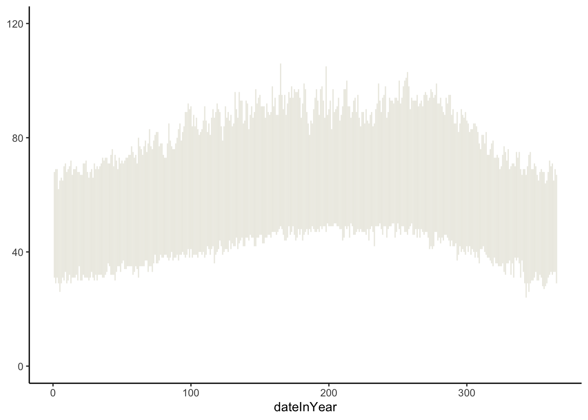
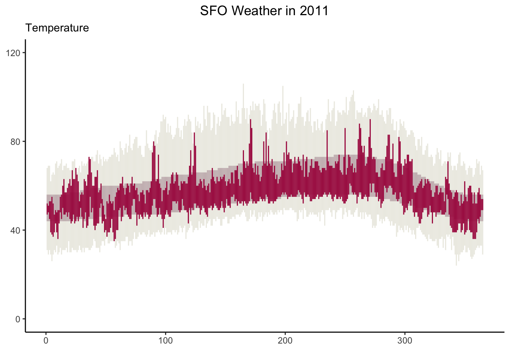
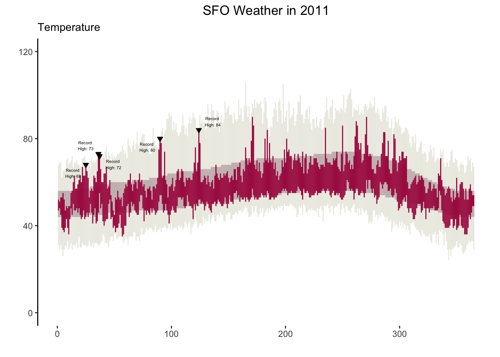

# Code for recreating the visualization# Use as many code chunks as you need to organize your work well
Creating the basic plot
Code
# geom_linerange basically allows to plot range data (two values of y: low and max with 1 x value )basic_plt <-ggplot(weather, aes(x = dateInYear, ymin = weather$RecordLow, ymax = weather$RecordHigh)) +geom_linerange(color ="#ECEBE3")+scale_y_continuous(limits =c(0, 120), breaks =c(0, 40, 80, 120)) +theme_classic() basic_plt

Adding normal and weather lows and highs
Code
# to add new layer representing more y values, we just use + and continue adding layers (no seperate operator in ggplot). # adding new layers of normal and record lows# just add + to add layers on saved basic plt, no need to pipe as we are just adding layers not saying "and then"normal_record_plt <-basic_plt +geom_linerange(color ="#C8B8BA", aes(ymin = weather$NormalLow, ymax = weather$NormalHigh)) +geom_linerange(color ="#A90248", alpha =1, aes(ymin = weather$Low, ymax = weather$High )) +labs(subtitle ="Temperature", x =" ", title ="SFO Weather in 2011" ) +theme(plot.title =element_text(hjust =0.5))normal_record_plt

Adding downward facing triangles and dotted lines
Code
library(ggrepel) # for repelling overlap in geom_text # filtering rows which whose record is Truerec_filtered <-weather %>%filter(Record ==TRUE)# adding the months and dashed lines # to create the month lines, calculating the mid-points so that the month labels in x axis are in the middlemonth_start_dates <-c(1,32, 60, 91, 121, 152, 182, 213, 244, 274, 305, 335) midpoints <- (month_start_dates[-length(month_start_dates)] + month_start_dates[-1]) /2# month_centers <-c( 16.5, 46.0, 75.5, 106.0, 136.0, 167.0, 197.5, 228.5, 259.0, 289.5, 320.0, 350)# Adding black downward facing triangles and text on plot # Used the inherit.aes= False argument so that it geom_text does not inherit previous mappings(error resolved) achieved_plt<- normal_record_plt +geom_point(data = rec_filtered, aes(x = rec_filtered$dateInYear, y = rec_filtered$RecordHigh), shape =25,fill ="black", inherit.aes =FALSE) +geom_text_repel(data = rec_filtered,aes(x = dateInYear, y = RecordHigh, label = RecordText),size =1.5, inherit.aes =FALSE ) +labs(x ="", y ="")# remocing the x-axis line achieved_plt<- achieved_plt +theme(axis.line.x =element_blank()) achieved_plt

Creatting the precipitation plot
Code
# precipitation plot # triangles area, using geom_area, for blue lines using geom_line, taking only subset of weather data only takes it when record is 1 meaning it makes a record, taking a shape and, color and size# geom_text directly puts label on the graph -- very cool! # Month start dates to draw dotted lines and calculating midpoints to center Months month_start_dates <-c(1,32, 60, 91, 121, 152, 182, 213, 244, 274, 305, 335) month_centers <-c( 16.5, 46.0, 75.5, 106.0, 136.0, 167.0, 197.5, 228.5, 259.0, 289.5, 320.0, 350) # Filtering out Cumulative precipitation for the end of month dates target_dates <-as.Date(c("2011-01-31","2011-02-28","2011-03-31","2011-04-30","2011-05-31","2011-06-30","2011-07-31","2011-08-31","2011-09-30","2011-10-31","2011-11-30","2011-12-31"))# Creating the column cuml_end_month weather <- weather %>%mutate(cuml_end_month =ifelse(date %in% target_dates, CulmPrec, NA))# Creating the precipitation plot precip_plt <-ggplot(weather, aes(x= dateInYear, y = CulmPrec)) +theme_classic() +geom_area(fill ="#ebeae2") +geom_line(color ="#32a3d8") +geom_point(data =subset(weather, RecordP ==1),shape =25, fill ="black", size =3) +scale_y_continuous(limits =c(0, 8), breaks =c(4,8)) +geom_vline(xintercept = month_start_dates, color ="lightgray")+scale_x_continuous(labels = month.abb, breaks = month_centers, expand =c(0,0)) +labs( subtitle ="Precipitation", x =" ", y =" ") +geom_text_repel(data = weather,aes(x = dateInYear, y = CulmPrec,label = cuml_end_month ), size =2, inherit.aes =FALSE ) +labs(x ="", y ="") # removing the x-axis line precip_plt<-precip_plt +theme(axis.line.x =element_blank()) precip_plt
In general, I never thought R has the power to create such powerful visualizations, I used think Python and Jave libraries could do it but learnt about some cool R libraries such as ggrepel and gridextra along with the usual ggplot. It was definitely big learning in terms of plotting exact downward triangles, to drawing dotted lines after, centering Months after calculating mid-points and most importatnt solving erorrs of geom_text(). So, building the plot step by step helpmed me learn algorithmic thinking.
Source Code
---title: "Recreated Original New York Times Graphic visualization"---## Original Graphic here{width=600, fig-align="center"}## What the Visualization contains- Temperature graph - Bands for the record, normal, and actual highs and lows are shown in the correct colors. - Downward triangles point to the record high temperatures above the red band. - Text displays the record high temperatures above the triangles. - X-axis label: 3-letter month abbreviations appear in the middle of each month. - Y-axis label: Tick marks at 0, 40, 80, and 120 only. - Vertical lines separate the months. - Title of "Temperature" is included.- Precipitation - Tan area and blue line reflecting the monthly cumulative precipitation is included. - Text (number) for cumulative precipitation for each month is included at the end of each month just above the blue line. - Downward triangles point to the record precipitation days. - Vertical lines separate the months. - Title of "Precipitation" is included.- Overall - Both the temperature and precipitation graphs are in one figure. - The temperature plot takes up more vertical space than the precipitation plot. - The title "SFO weather in 2011" is present.## Setup```{r}# Code for loading packages and reading in datalibrary(tidyverse)weather <-read_csv("https://mac-stat.github.io/data/sfo_weather.csv")head(weather)```## Visualization```{r}# Code for recreating the visualization# Use as many code chunks as you need to organize your work well```### Creating the basic plot```{r}# geom_linerange basically allows to plot range data (two values of y: low and max with 1 x value )basic_plt <-ggplot(weather, aes(x = dateInYear, ymin = weather$RecordLow, ymax = weather$RecordHigh)) +geom_linerange(color ="#ECEBE3")+scale_y_continuous(limits =c(0, 120), breaks =c(0, 40, 80, 120)) +theme_classic() basic_plt```### Adding normal and weather lows and highs```{r}# to add new layer representing more y values, we just use + and continue adding layers (no seperate operator in ggplot). # adding new layers of normal and record lows# just add + to add layers on saved basic plt, no need to pipe as we are just adding layers not saying "and then"normal_record_plt <-basic_plt +geom_linerange(color ="#C8B8BA", aes(ymin = weather$NormalLow, ymax = weather$NormalHigh)) +geom_linerange(color ="#A90248", alpha =1, aes(ymin = weather$Low, ymax = weather$High )) +labs(subtitle ="Temperature", x =" ", title ="SFO Weather in 2011" ) +theme(plot.title =element_text(hjust =0.5))normal_record_plt```### Adding downward facing triangles and dotted lines ```{r}library(ggrepel) # for repelling overlap in geom_text # filtering rows which whose record is Truerec_filtered <-weather %>%filter(Record ==TRUE)# adding the months and dashed lines # to create the month lines, calculating the mid-points so that the month labels in x axis are in the middlemonth_start_dates <-c(1,32, 60, 91, 121, 152, 182, 213, 244, 274, 305, 335) midpoints <- (month_start_dates[-length(month_start_dates)] + month_start_dates[-1]) /2# month_centers <-c( 16.5, 46.0, 75.5, 106.0, 136.0, 167.0, 197.5, 228.5, 259.0, 289.5, 320.0, 350)# Adding black downward facing triangles and text on plot # Used the inherit.aes= False argument so that it geom_text does not inherit previous mappings(error resolved) achieved_plt<- normal_record_plt +geom_point(data = rec_filtered, aes(x = rec_filtered$dateInYear, y = rec_filtered$RecordHigh), shape =25,fill ="black", inherit.aes =FALSE) +geom_text_repel(data = rec_filtered,aes(x = dateInYear, y = RecordHigh, label = RecordText),size =1.5, inherit.aes =FALSE ) +labs(x ="", y ="")# remocing the x-axis line achieved_plt<- achieved_plt +theme(axis.line.x =element_blank()) achieved_plt```### Creatting the precipitation plot ```{r}# precipitation plot # triangles area, using geom_area, for blue lines using geom_line, taking only subset of weather data only takes it when record is 1 meaning it makes a record, taking a shape and, color and size# geom_text directly puts label on the graph -- very cool! # Month start dates to draw dotted lines and calculating midpoints to center Months month_start_dates <-c(1,32, 60, 91, 121, 152, 182, 213, 244, 274, 305, 335) month_centers <-c( 16.5, 46.0, 75.5, 106.0, 136.0, 167.0, 197.5, 228.5, 259.0, 289.5, 320.0, 350) # Filtering out Cumulative precipitation for the end of month dates target_dates <-as.Date(c("2011-01-31","2011-02-28","2011-03-31","2011-04-30","2011-05-31","2011-06-30","2011-07-31","2011-08-31","2011-09-30","2011-10-31","2011-11-30","2011-12-31"))# Creating the column cuml_end_month weather <- weather %>%mutate(cuml_end_month =ifelse(date %in% target_dates, CulmPrec, NA))# Creating the precipitation plot precip_plt <-ggplot(weather, aes(x= dateInYear, y = CulmPrec)) +theme_classic() +geom_area(fill ="#ebeae2") +geom_line(color ="#32a3d8") +geom_point(data =subset(weather, RecordP ==1),shape =25, fill ="black", size =3) +scale_y_continuous(limits =c(0, 8), breaks =c(4,8)) +geom_vline(xintercept = month_start_dates, color ="lightgray")+scale_x_continuous(labels = month.abb, breaks = month_centers, expand =c(0,0)) +labs( subtitle ="Precipitation", x =" ", y =" ") +geom_text_repel(data = weather,aes(x = dateInYear, y = CulmPrec,label = cuml_end_month ), size =2, inherit.aes =FALSE ) +labs(x ="", y ="") # removing the x-axis line precip_plt<-precip_plt +theme(axis.line.x =element_blank()) precip_plt```### Arranging both plots together```{r}# Arranging both plts library(gridExtra)plot1 <-achieved_pltplot2 <-precip_pltgrid.arrange(plot1, plot2, heights =c(11, 7.5)) ```## Learning and ReflectionIn general, I never thought R has the power to create such powerful visualizations, I used think Python and Jave libraries could do it but learnt about some cool R libraries such as ggrepel and gridextra along with the usual ggplot. It was definitely big learning in terms of plotting exact downward triangles, to drawing dotted lines after, centering Months after calculating mid-points and most importatnt solving erorrs of geom_text(). So, building the plot step by step helpmed me learn algorithmic thinking.